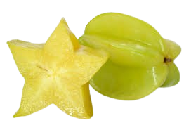

Belimbing
💡 Fakta-fakta tentang Belimbing! 💡
Belimbing dikenali juga sebagai starfruit kerana bentuknya seperti bintang bila dipotong.
Rasanya masam-manis dan menyegarkan, sesuai dimakan segar atau dijadikan jus.
Buah belimbing kaya dengan vitamin C dan serat yang baik untuk kesihatan.
Pokok belimbing boleh hidup lama dan berbuah sepanjang tahun di kawasan tropika.
Terdapat dua jenis utama: belimbing manis dan belimbing masam.
🌱 Cara menanam pokok Belimbing 🌱
Langkah-Langkah:
- Pilih tanah yang subur dan gembur untuk menanam anak pokok belimbing.
- Siram pokok secara berkala supaya tanah kekal lembap.
- Letakkan pokok di kawasan yang menerima cahaya matahari penuh.
- Baja pokok setiap bulan untuk membantu pertumbuhan.
- Pangkas dahan yang terlalu rapat supaya pokok kekal sihat dan cepat berbuah.